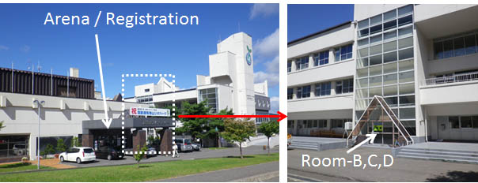

Toyako Curtural Center
The nearest airport to Lake Toya is Shin(New) Chitose International Airport (CTS). There are many domestic fights connecting to Tokyo (Haneda, Narita), Osaka(Kansai, Itami, Kobe), Nagoya, and other cities in Japan. There are some international flights from/to Asian cities such as Seoul, Beijing, Shanghai, Taipei, Hong-Kong. Shin Chitose Airport is located about 50km south-east of the center of Sapporo city and it takes 37 minutes by airport shuttle trains.
There are no shuttle bus services directly connecting the airport and Lake Toya. You have to use trains and a bus / taxi.
| Airport Station | -JR(Shuttle)- | Minami Chitose Station | -JR(Express)- | Toya Station | -Bus- | Toyako Onsen |
| 07:02 | 07:05|07:08 | Super Hokuto 2 | 08:50|09:35 | 09:52 | ||
| 07:51 | 07:54|08:00 | Hokuto 4 | 09:22|09:35 | 09:52 | ||
| 09:03 | 09:06|09:09 | Hokuto 6 | 10:32|11:24 | 11:42 | ||
| 10:33 | 10:36|10:52 | Super Hokuto 8 | 12:11|12:44 | 13:02 | ||
| 12:33 | 12:36|12:45 | Super Hokuto 10 | 14:05|14:16 | 14:33 | ||
| 14:48 | 14:51|15:05 | Hokuto 12 | 16:26|17:05 | 17:22 | ||
| 17:03 | 17:06|17:19 | Hokuto 14 | 18:37|19:28 | 19:46 | ||
| 18:33 | 18:36|18:45 | Hokuto 16 | 20:07|20:49 | 21:05 | ||
| 19:48 | 19:51|20:00 | Super Hokuto 18 | 21:18| no bus |
Could not load Kickstrap.There are several common reasons for this error.